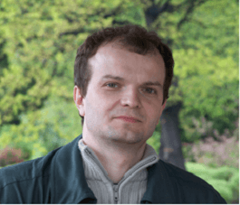

Dr Jerzy Raczyk

Kontakt:
nr pokoju: 165
nr telefonu: 071/375-9-580
e-mail: jerzy.raczyk@uwr.edu.pl
konsultacje: brak ( zawsze i na telefon )
Zainteresowania naukowe:
- Geochemiczny zapis procesów wietrzeniowo-glebowych w późnoplejstoceńskich sekwencjach lessowo-glebowych
- Obszary źródłowe lessów polskich
- Interakcje woda-skała w sekwencjach lessowo-glebowych
- Parametry geologiczno-inżynierskie lessów
- Chemia wody
- Badania środowiskowe
Wykształcenie:
- 1989 - 1992 Uniwersytet Wrocławski; Studia licencjackie na Wydziale Mat-Fiz-Chem kierunek: chemia z fizyką (Praca licencjacka: „Widmo promieniowania elektromagnetycznego”).
- 1992 - 1994: Uniwersytet Wrocławski studia magisterskie na Wydziale Mat-Fiz-Chem, kierunek: chemia (praca magisterska (obrona: 06.10.1994r): „Izolacja i badania wstępne frakcji polisacharydowych Urtica Dioica”).
- 21.06.2013: Obrona pracy doktorskiej na Wydziale Nauk o Ziemi i Kształtowania Środowiska UWr pt.”Właściwości geochemiczne późnoplejstoceńskich lessów Wzgórz Trzebnickich i Wzgórz Niemczańsko-Strzelińskich”
Dydaktyka:
Nie dotyczy
Doświadczenia naukowe zdobyte za granicą:
-
Udział w 10 stypendiach programu Erasmus+
- 15-19. 09. 2018: Słowenia - Lublana - Centrum Badawczo-Naukowe Słoweńskiej Akademii Nauk Lublana; Zakład Geografii Fizycznej - Dr. Matija Zorn
- 5-9. 06. 2017: Niemcy - Drezno - Technische Universität Dresden; Geographisches Institut; Lehrstuhr Physische Geographie - Prof. Dr Dominik Faust
- 13-17.06.2016: Niemcy - Bayreuth - Universität Bayreuth; Geographisches Institut; Lehrstuhr Geomorphologie - Prof. Dr Ludwig Zoeller
- 8-12.06. 2015: Francja - Meudon - UMR CNRS 8591 - Laboratoire de Géographie Physique : Environnements quaternaires et actuels - Dr Pierre Antoine
- 22-26.04. 2014: Niemcy - Drezno - Technische Universität Dresden; Geographisches Institut; Lehrstuhr Physische Geographie - Prof. Dr Dominik Faust
- 23-27. 09. 2013: Węgry - Szeged - University of Szeged; Department of Geology and Paleontology - Prof. Pál Sümegi
- 20-24. 05. 2013 Niemcy - Drezno - Technische Universität Dresden; Geographisches Institut; Lehrstuhr Physische Geographie - Prof. Dr Dominik Faust
- 7-11.05.2012 Niemcy - Bayreuth - Universität Bayreuth; Geographisches Institut; Lehrstuhr Geomorphologie - Prof. Dr Ludwig Zoeller
- 28.03-01.04. 2011 Niemcy - Bochum - RUHR Universität Bochum; Geographisches Institut; Lehrstuhr Bodenkunde - Prof. Dr Bernd Marschner
- 10-14 05. 2010 Niemcy - Bayreuth - Universität Bayreuth; Geographisches Institut; Lehrstuhr Geomorphologie - Prof. Dr Ludwig Zoeller
- 2018:
- 05 – 07.10. Czynny udział w konferencji International Conference Natural Hazards – lessons from the past and contemporary challenges, Novi Sad, Serbia
- 23 – 27.09. Czynny udział w konferencji Central European Conference on Geomorphology and Quaternary Sciences, Giessen, Niemcy
- 2017: 13 – 16.03. Czynny udział w konferencji International Symposium on eolian Dynamics, Paleosols and environmental Change in Drylands, La Oliva, Fuerteventura
- 2016: 26 – 29.08. Czynny udział w konferencji Loess2M – modelling & mapping, Novi Sad, Serbia
Nagrody i wyróżnienia:
- 2018: Srebrny medal zasługi za długoletnią służbę
Udział w projektach badawczych:
- Grant NCN Preludium 14, nr projektu 2017/27/N/ST10/01208, 2018-2020: Stratygraficzna i przestrzenna zmienność składu chemicznego późnoplejstoceńskich sekwencji lessowo-glebowych Polski w kontekście zmian paleośrodowiskowych i paleoklimatycznych. Charakter udziału – wykonawca
- Grant NCN Opus 14, nr projektu 2017/27/B/ST10/01854, 2018-2022: Gwałtowne ochłodzenia w trakcie ostatniego zlodowacenia w centralnej części Europejskiego Pasa Lessowego – w Polsce i w zachodniej części Ukrainy. Charakter udziału – wykonawca
- Grant NCN Sonata 1, nr projektu 2011/01/D/ST10/06049, 2011-2014: Gwałtowne ochłodzenia w trakcie ostatniego zlodowacenia w centralnej części Europejskiego Pasa Lessowego – w Polsce i w zachodniej części Ukrainy. Charakter udziału – wykonawca
Wybrane publikacje:
- 2018:
- An attempt to reconstruct the late Saalian to Plenivistulian
(MIS6-MIS3) natural lake
environment from the "Parchliny 2014" section, central Poland / Lucyna
Wachecka-Kotkowska, Dariusz Krzyszkowski, Małgorzata Malkiewicz, Joanna
Mirosław-Grabowska, Monika Niska, Jarmila Krzymińska, Elżbieta Myśkow,
Jerzy Raczyk, Dariusz Wieczorek, Andrzej Stoiński,
Monika Rzodkiewicz. -
Bibliogr. - Streszcz. w jęz. ang. // Quaternary International. - Vol. 467, Part A
(2018), s. 5-25 : il., fot., wykr.
Dostęp do abstraktu: https://doi.org/10.1016/j.quaint.2016.06.013 - Geochemical characterization of the Late Pleistocene
loess-palaeosol sequence in
Tyszowce (Sokal Plateau-Ridge, SE Poland) / Skurzyński J., Jary Z.,
Raczyk J., Moska P.,
Korabiewski B., Ryzner K., Krawczyk M., 2018.. Quaternary International, w druku
https://doi.org/10.1016/j.quaint.2018.04.023
- An attempt to reconstruct the late Saalian to Plenivistulian
(MIS6-MIS3) natural lake
environment from the "Parchliny 2014" section, central Poland / Lucyna
Wachecka-Kotkowska, Dariusz Krzyszkowski, Małgorzata Malkiewicz, Joanna
Mirosław-Grabowska, Monika Niska, Jarmila Krzymińska, Elżbieta Myśkow,
Jerzy Raczyk, Dariusz Wieczorek, Andrzej Stoiński,
Monika Rzodkiewicz. -
Bibliogr. - Streszcz. w jęz. ang. // Quaternary International. - Vol. 467, Part A
(2018), s. 5-25 : il., fot., wykr.
- 2017:
- The rare Holsteinian (Mazovian) interglacial limnic deposits in
the Książnica outcrop at
Krzczonów (near Świdnica), Sudetic Foreland. / Krzyszkowski D., Wachecka-Kotkowska L.,
Malkiewicz M., Jary Z., Tomaszewska K., Niska M., Myśkow E.,
Raczyk J.,
Drzewicki W.,
Hamryszczak D., Nawrocki J., Ciszek D., Rzodkiewicz M., Krzymińska J., Skurzyński J.,
Jezierski P., 2017. Quaternary International, w druku
https://doi.org/10.1016/j.quaint.2017.09.046 - Stratygraficzne i przestrzenne aspekty zróżnicowania składu
chemicznego
późnoplejstoceńskich sekwencji lessowo-glebowych w Polsce - przykłady profili w
Tyszowcach i Białym Kościele. / Skurzyński J., Jary Z.,
Raczyk J., Moska
P., Krawczyk M., 2017. Acta Geographica Lodziensia 106, 87-103.
https://doi.org/10.26485/AGL/2017/106/7 - Skład chemiczny wód porowych górnoplejstoceńskiej sekwencji lessowo-glebowej w Zaprężynie (SW Polska). / Skurzyński J., Modelska M., Raczyk J., Staśko S., Jary Z., 2017. Przegląd Geologiczny 65, nr 11/2, 1383-1387.
- The rare Holsteinian (Mazovian) interglacial limnic deposits in
the Książnica outcrop at
Krzczonów (near Świdnica), Sudetic Foreland. / Krzyszkowski D., Wachecka-Kotkowska L.,
Malkiewicz M., Jary Z., Tomaszewska K., Niska M., Myśkow E.,
Raczyk J.,
Drzewicki W.,
Hamryszczak D., Nawrocki J., Ciszek D., Rzodkiewicz M., Krzymińska J., Skurzyński J.,
Jezierski P., 2017. Quaternary International, w druku
- 2016: Water treatment residuals
containing iron and manganese
oxides for arsenic
removal from water - characterization of physicochemical properties and adsorption studies /
Daniel Ociński, Irena Jacukowicz-Sobala, Piotr Mazur,
Jerzy Raczyk, Elżbieta
Kociołek-Balawejder. - Bibliogr. - Streszcz. w jęz. ang. // Chemical Engineering Journal. - Vol.
294 (2016), s. 210-221 : il., fot., wykresy
Dostęp do abstraktu: http://dx.doi.org/10.1016/j.cej.2016.02.111 - 2015: The early Gravettian in a
marginal area : new evidence
from SW Poland /
Andrzej Wiśniewski, Tomasz Płonka, Zdzisław Jary, Lenka Lisa, Andrzej Traczyk, Bernadeta
Kufel-Diakowska, Jerzy Raczyk, Aleš Bajer. - Bibliogr. -
Streszcz. w jęz. ang. //
Quaternary
International. - Vol. 359-360 (2015), s. 131-152 : il.
Dostęp: http://dx.doi.org/10.1016/j.quaint.2014.10.003 - 2014:
- Evaluation of hybrid polymer containing iron oxides as As(III) and
As(V) sorbent for
drinking water purification / Daniel Ociński, Irena Jacukowicz-Sobala,
Jerzy Raczyk,
Elżbieta Kociołek-Balawejder. - Bibliogr. - Streszcz. w jęz. ang. // Reactive and
Functional Polymers. - Vol. 83 (2014), s. 24-32 : wykr.
Dostęp: http://dx.doi.org/10.1016/j.reactfunctpolym.2014.07.005 - Sorpcja arsenianów(III) i (V) na polimerze hybrydowym zawierającym
tlenki żelaza i
manganu otrzymanym przez modyfikację mocno zasadowego anionitu / Irena
Jacukowicz-Sobala, Daniel Ociński, Jerzy Raczyk,
Elżbieta
Kociołek-Balawejder. -
Bibliogr. - Streszcz. w jęz. ang., pol. // Przemysł Chemiczny. - Vol. 93, nr 11 (2014),
s. 1866-1873 : fot., wykr.
Dostęp: http://dx.medra.org/10.12916/przemchem.2014.1866
- Evaluation of hybrid polymer containing iron oxides as As(III) and
As(V) sorbent for
drinking water purification / Daniel Ociński, Irena Jacukowicz-Sobala,
Jerzy Raczyk,
Elżbieta Kociołek-Balawejder. - Bibliogr. - Streszcz. w jęz. ang. // Reactive and
Functional Polymers. - Vol. 83 (2014), s. 24-32 : wykr.